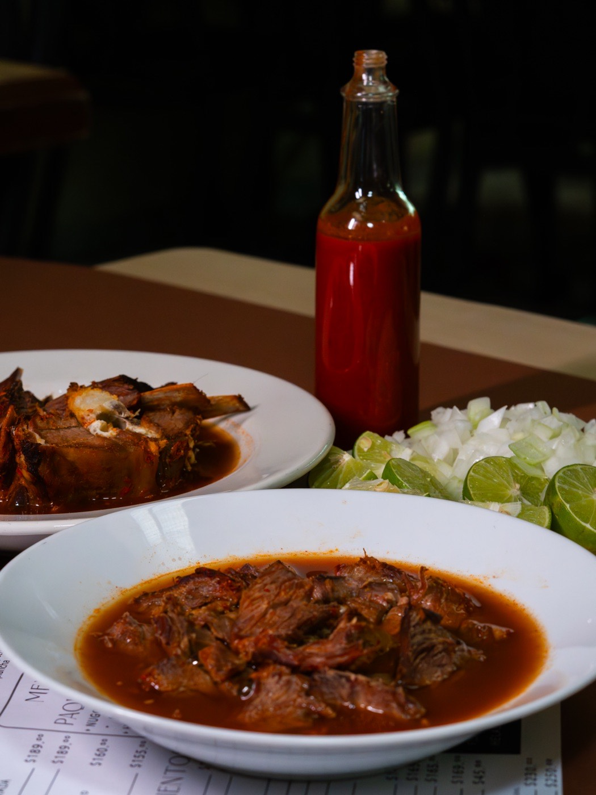
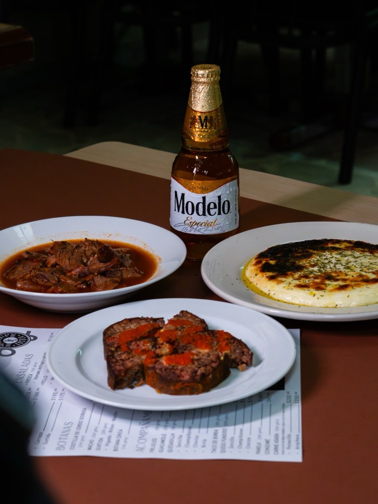
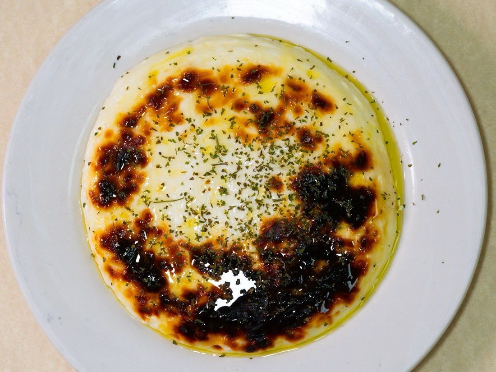
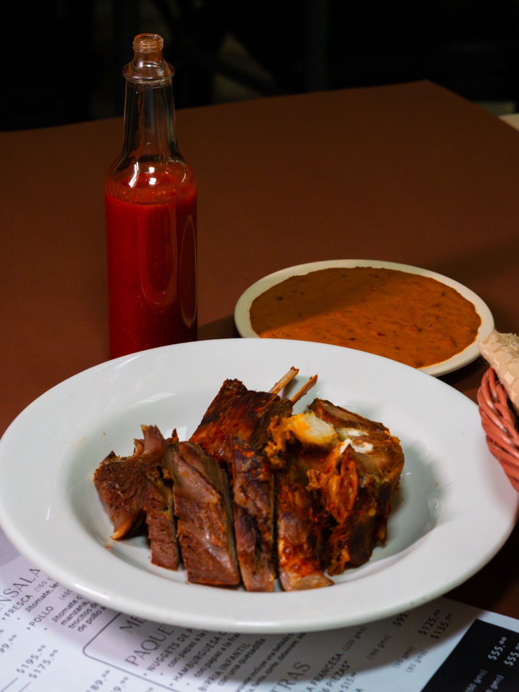
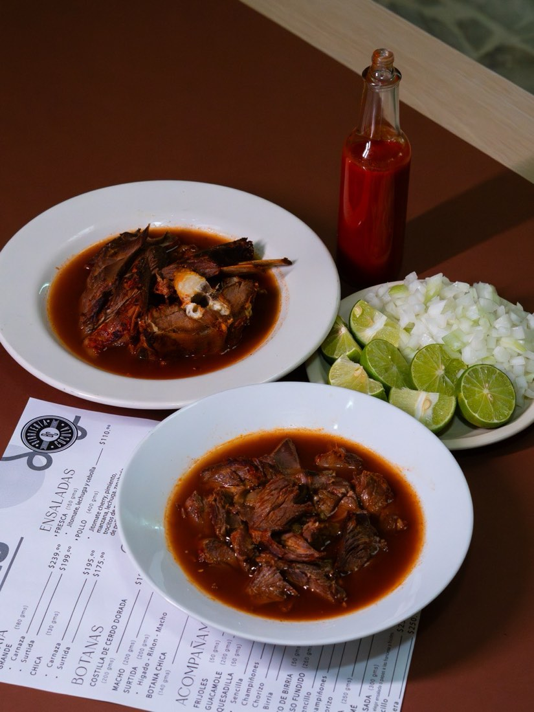
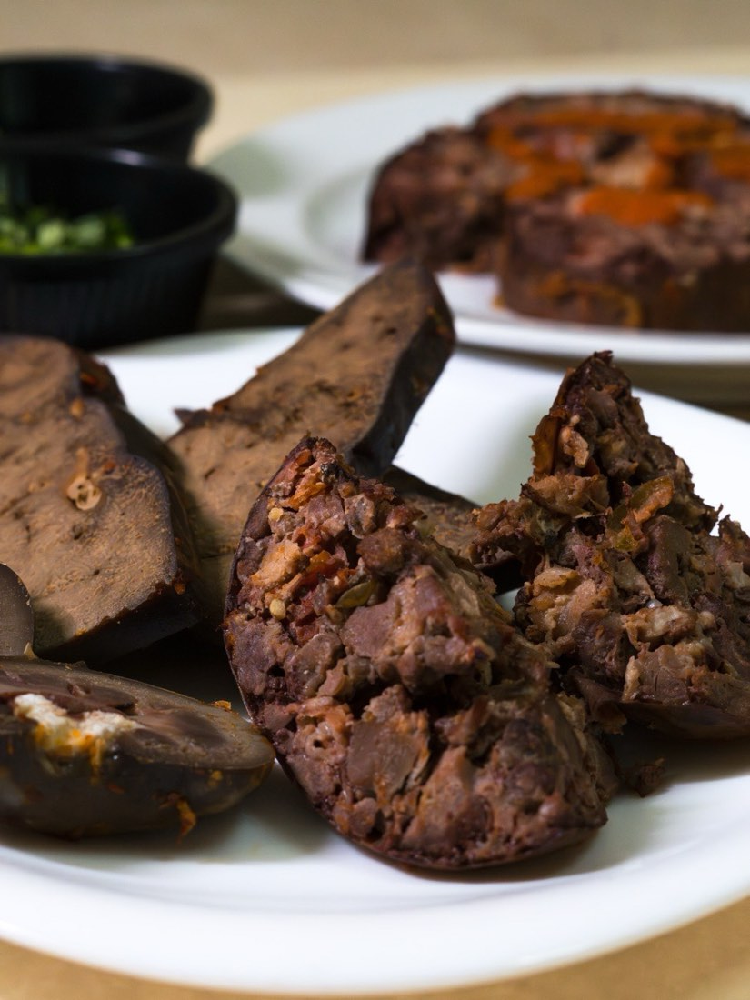
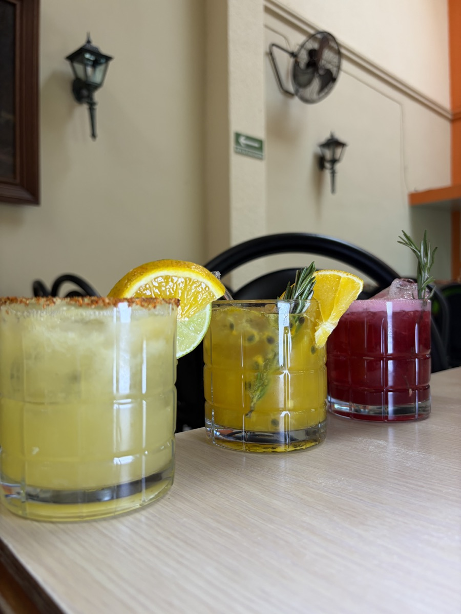
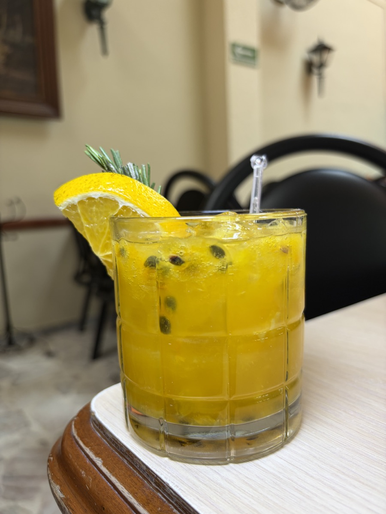

01
Birria grande
Porción 180 g de chivo, cerdo o ternera. Servida con cebolla, cilantro, limón y tortillas recién hechas.
Especialidad de la casaCocula, cuna del mariachi y de la birria. Receta de familia, comal caliente y la paciencia que pide una birria bien hecha.
Mucho gusto
Cocula, un pueblo al sur de Jalisco, es reconocido como la cuna del mariachi y de la birria: de ahí vienen dos de las tradiciones más queridas de la cultura mexicana.
De ese origen venimos. Desde 1978 servimos birria con el mismo cariño y la misma paciencia que se cocina en casa: comal caliente, tortilla recién hecha y consomé bien servido. Una tradición familiar que seguimos cuidando todos los días.
Conoce nuestra mesa →Fotografías
Cada plato es una versión honesta de la cocina tapatía, pensada para compartir y para repetir.






La carta
Una carta hecha a mano, pensada para compartir. Birria por porción, botanas para empezar, platillos del día y algo dulce para cerrar.
Porción 180 g de chivo, cerdo o ternera. Servida con cebolla, cilantro, limón y tortillas recién hechas.
Especialidad de la casa
Porción 150 g. Elige chivo, cerdo o ternera. Surtida disponible.

Porción 90 g. Para acompañar tacos o probar de todo.
60 g de birria deshebrada en tortilla a mano, con salsa de la casa.
60 g con birria de chivo, ternera o cerdo. Versión natural también disponible.
Porción 200 g. Costilla dorada al momento, con guarniciones de la casa.
Para empezar200 g de machito asado al carbón.

200 g · machito, hígado y riñón. Para compartir.

100 g · porción para abrir el apetito.
Aguacate, jitomate, cebolla, cilantro y limón.
60 g de queso fundido en tortilla recién hecha.
60 g · natural, con champiñones, chistorra o chorizo argentino.
Corte tradicional, dorado al carbón.
Birria, panela frita y machito. Para conocer la cocina de la casa en un solo plato.
RecomendadoLechuga, jícama, manzana y cebolla con vinagreta de la casa.

200 g · pechuga rebanada, lechuga, jícama, manzana, panela y mango.
Asada al carbón, con guarniciones de la casa.
Queso panela dorado al comal con tortillas hechas a mano.

Queso panela acompañado de birria de chivo deshebrada.
Postre tradicional tapatío, dorado al horno.
El clásicoReceta de la casa, suave y con su caramelo.
Una bola de la casa para cerrar bien la mesa.



Nuestra historia
Empezamos en 1978 con una receta familiar y un comal caliente. Hoy seguimos cuidando ese mismo proceso: cocción lenta, tortillas hechas a mano y consomé bien servido.
Nuestra cocina nació en Cocula y se quedó en Guadalajara. Casi medio siglo después, esta sigue siendo una mesa para reunirse, compartir y volver.
A tu servicio
Estamos en Federalismo, en pleno corazón de Guadalajara. Abierto todos los días.
Calz. del Federalismo Nte. 1374
Mezquitán, C.P. 44260
Guadalajara, Jalisco
Abierto todos los días
de 10:00 a 18:00 h